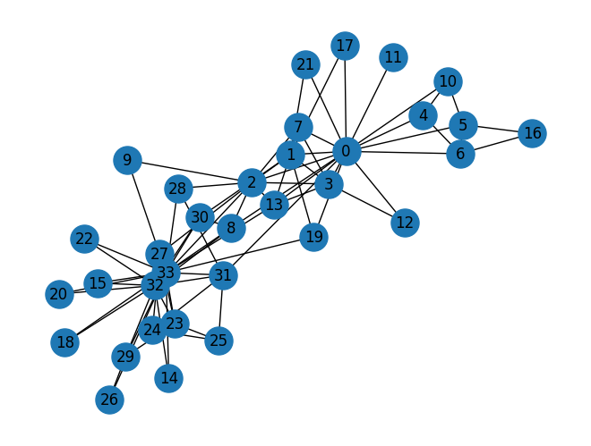
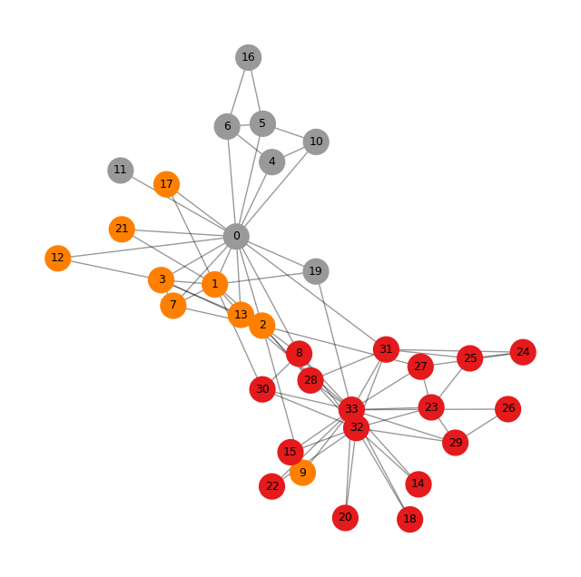
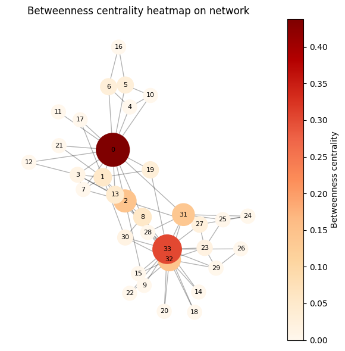
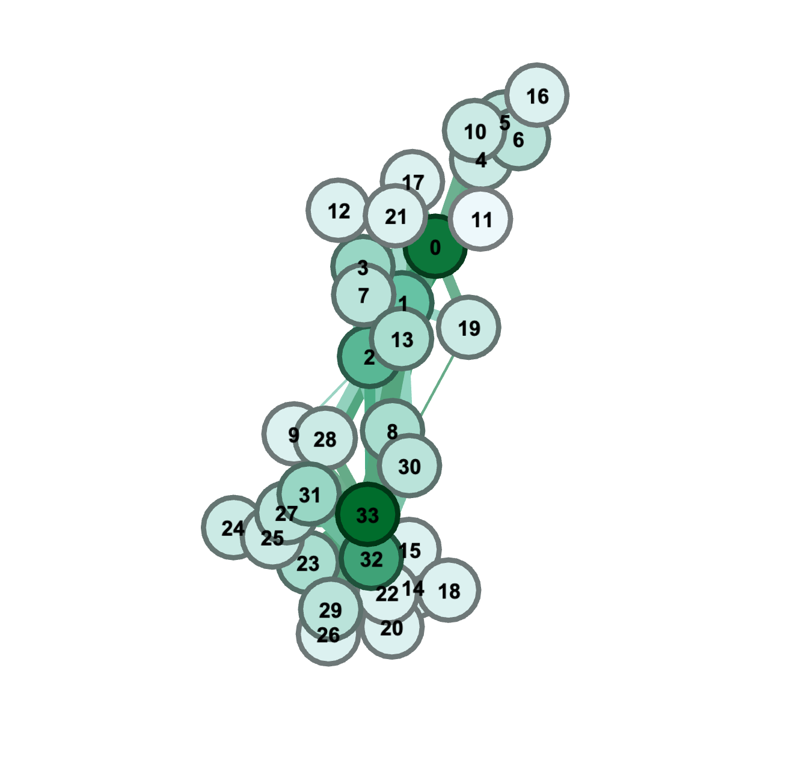

社会网络分析及其可视化¶
社会网络分析¶
社会网络分析（Social Network Analysis, SNA）是一套用来研究“人与人、组织与组织之间关系结构”的方法。它重点不在个人本身，而在于关系：谁和谁联系、联系强弱如何、信息在关系网络中如何流动、哪些节点在网络中最重要等。
研究关系结构，而不是孤立的个体¶
社会网络分析把个体（人、组织、国家等）视为“节点”，把关系（合作、交流、交易、关注、信任等）视为“边”。
它主要回答的问题包括：
谁与谁联系得最紧密？
网络中有没有“核心人物”“关键组织”？
信息是怎样在网络中传播的？
哪些节点连接了原本不相连的群体？
衡量节点的重要性¶
SNA会计算一些指标来判断谁在网络中更关键，比如：
度中心性（Degree centrality）：一个节点连接了多少人。
中介中心性（Betweenness）：谁在网络中起“桥梁”作用。
接近中心性（Closeness）：谁更容易接触到网络所有其他人。
特征向量中心性（Eigenvector）：节点不仅自己重要，还连接重要的人。
这些指标可以用来识别“影响力者”“传播关键节点”等。
分析网络中的群体结构¶
SNA可以发现：
社会群体（比如朋友圈、合作圈）
组织内部的小群体或者部门壁垒
社群之间的联系强度
隐性关系或潜在合作路径
技术上通常用到聚类、社区发现等方法。
典型应用领域¶
社会网络分析非常广泛，常见于：
社交媒体分析（微博、推特上的关系、传播、意见领袖）
组织行为学（公司内部沟通分析、找出合作瓶颈）
公共卫生（疫情传播路径分析）
犯罪网络分析（揭示犯罪团伙的核心成员）
学术分析（合作网络、引用网络）
用户体验与语言服务领域（分析用户群体、知识传播结构）
案例背景¶
故事发生在 20 世纪 70 年代早期，地点是美国一所大学的校园空手道俱乐部。俱乐部成员之间除了训练，还经常一起参加聚会、外出和社交活动，因此形成了密集的社交网络。
研究者 Wayne W. Zachary 在 1970–1972 年间系统观察并记录了俱乐部内部：
谁与谁一起活动
成员之间的亲密程度
社交互动次数
他最终构建了一个 34 人的社交网络，每条边代表成员间的互动或友谊。
冲突的出现：俱乐部领导人与管理员意见不合¶
俱乐部有两个核心人物：
Instructor（教练）——网络数据中对应节点 0（不同论文编号略有差异）
Administrator（管理员）——对应 节点 33
他们在俱乐部的运营方式、课程费用和管理理念上产生了尖锐分歧。
随着时间推移，俱乐部成员开始在社交上“站队”：
喜欢教练的成员逐渐围绕教练形成一个社群
认同管理员的人围绕管理员形成另一群
这些倾向在网络结构中体现得非常明显，**两个社区在网络中自然形成，没有任何算法都能肉眼看出。**这就是它为什么成为 SNA 经久不衰的示范案例的原因。
最终结果：俱乐部分裂成两个组织¶
冲突升级后，俱乐部最终 正式分裂成两个独立的俱乐部。
成员分布如下：
一些成员选择跟随原教练，加入他新的俱乐部
另外一些成员留在原来的俱乐部，由管理员负责
真实世界的结果与 Zachary 收集的社交网络结构 高度吻合：
在网络里属于教练社区的人，大多数最终也选择了教练阵营
社区划分算法（例如 Girvan–Newman 或 Louvain）几乎可以 100% 准确预测成员最终选择
这使得该数据成为：
社会网络分析中“社区检测”的标杆教材
“社交结构如何预测行为”的最佳案例之一
网络分析过程¶
明确分析对象¶
Zachary 的研究对象：
节点：空手道俱乐部 34 名成员
边：成员之间在课外有交往（互动次数反映权重）
网络类型：无向、加权图
数据收集¶
Zachary 在 1970–1972 对俱乐部成员进行了 参与式观察：
记录成员之间的互动
记录共同出席活动
打分形成频率矩阵（interaction matrix）
最终得到 34×34 的邻接矩阵（或边列表）
指标分析¶
度中心性（Degree Centrality）¶
用于找“最受欢迎”或“最活跃”的成员。
在空手道俱乐部中：度中心性最高的人是 0 号（Mr. Hi）和 33 号（Club President John A）
这对应了：一个是教练，一个是管理员，两派领袖。
他们很重要，连边很多，是自然的中心人物。
介数中心性（Betweenness Centrality）¶
用于识别“桥梁人物”“分裂风险点”。
使用 Brandes 算法计算最短路径上的关键节点。
在空手道俱乐部中：
节点 2、1、3 等有高介数中心性
这些人并不是“最受欢迎”，但他们位于两派之间
他们的立场左右着俱乐部分裂的方向
社区检测（Community Detection）¶
算法：Girvan–Newman
步骤：
找介数最高的边
删除
再计算
不断迭代直到网络分裂成两块
在空手道数据上：
GN 算法自动把 34 个节点分成两群
结果与俱乐部实际后来的现实分裂高度吻合
可视化¶
用力导向算法（Fruchterman-Reingold 或 ForceAtlas2）绘图：
特点：
边多的节点会更靠近
关系密切的成员自然聚成团
两派显著分离
工具介绍¶
NetworkX (Python)¶
特点：最经典、最易用的社会网络分析库。
能做什么：中心性、路径、社区发现、图可视化等。
适合：教学、科研、小中规模网络（几十万节点以内）。
优势：简单易用，生态丰富，与 pandas/scikit-learn 深度融合。
功能¶
1. 创建并操作图结构 支持：
有向图
无向图
多重图（多条边）
自定义节点属性、边属性
import networkx as nx
G = nx.Graph()
G.add_node("A")
G.add_edge("A", "B")
2. 计算中心性指标（核心功能）
社会网络分析常用的所有指标都能算：
Degree centrality（度中心性）
Betweenness centrality（中介中心性）
Closeness centrality（接近中心性）
Eigenvector centrality（特征向量中心性）
PageRank（网页排名指标）
nx.betweenness_centrality(G)
3. 分析网络结构
最短路径
连通分量
聚类系数
图直径、平均距离
社区发现（基于 Girvan–Newman、Louvain 等）
4. 可视化
NetworkX 有基本可视化功能（但不如 Gephi 好看）：
import matplotlib.pyplot as plt
nx.draw(G)
plt.show()
5. 与 Pandas、Numpy、Scikit-Learn 配合
可以从 CSV / DataFrame 直接构建图：
import pandas as pd
df = pd.read_csv("edges.csv")
G = nx.from_pandas_edgelist(df, source="source", target="target")
NLP / 文本处理背景的人，可以轻松用它分析：
词语共现网络
引文网络
学术合作网络
用户行为网络
技术写作系统中的术语传播网络
优缺点¶
优点：
入门简单，适合学习 SNA
Python 生态完善
小中规模图性能稳定（几十万节点以内）
文档齐全，科研论文中非常常见
缺点：
不适合处理特别大的图（上千万节点）
可视化能力不如 Gephi、Cytoscape
高性能需求时可换 igraph 或 Graph-tool
与Gephi的关系
工具 |
类型 |
用途 |
|---|---|---|
NetworkX |
Python 库 |
计算、建模、算法、数据处理 |
Gephi |
桌面可视化软件 |
绘图、美化、探索式分析 |
实际研究中常常这样组合使用：
用 NetworkX 读取与处理数据、计算指标
输出 GEXF 文件
用 Gephi 打开 GEXF 进行布局与可视化
nx.write_gexf(G, "network.gexf")
代码实现¶
0. 安装networkx¶
!pip install networkx
1. 加载空手道数据¶
import networkx as nx
G = nx.karate_club_graph()
print(G.number_of_nodes(), G.number_of_edges())
34 78
表示这个图中有 34 个节点（共 34 名成员参与了 Zachary 的研究），有 78 条边（总共有 78 对成员在研究期间被观察到有社交联系）
2. 可视化一个网络¶
import matplotlib.pyplot as plt
nx.draw(G, with_labels=True, node_size=500) #每个节点的面积大小为 500（像素的平方）左右
plt.show()

3. 计算度中心性（合作/连接最多的）¶
deg = nx.degree_centrality(G)
sorted(deg.items(), key=lambda x: -x[1])[:5]
nx.degree_centrality(G) 的输出是每个节点的 度中心性，公式为：
degree_centrality(node) = 该节点的度数 / (N - 1)
其中 N 是整个图的节点数量。
对于 Zachary 空手道俱乐部网络，N = 34，因此：
分母 (N−1) = 33。
[(33, 0.5151515151515151),
(0, 0.48484848484848486),
(32, 0.36363636363636365),
(2, 0.30303030303030304),
(1, 0.2727272727272727)]
节点 |
度中心性 |
解释 |
|---|---|---|
33 |
0.515 |
节点 33 与 17 个节点相连（17/33 ≈ 0.515）。它是全图最关键的“交往中心”，高度活跃，很可能是网络中的领导者或关键人物。 |
0 |
0.485 |
节点 0 与 16 个节点相连（16/33）。它也是非常核心的成员，是另一个主要中心节点。 |
32 |
0.364 |
与约 12 个节点相连（12/33）。属于比较重要但没有 33、0 那么关键的次级中心。 |
2 |
0.303 |
与约 10 个节点相连（10/33）。处于网络较显眼位置，但不是最中心的人。 |
1 |
0.273 |
与约 9 个节点相连（9/33）。属于较活跃的成员，但中心性进一步降低。 |
这和经典研究的结论一致：
节点 33 通常对应“Mr. Hi”阵营的核心
节点 0 对应“John A”阵营的核心
4. 介数中心性（“桥梁”角色）¶
bet = nx.betweenness_centrality(G)
sorted(bet.items(), key=lambda x: -x[1])[:5]
中介中心性（betweenness centrality） 衡量一个节点在网络中充当“桥梁”或“中间人”的程度。
公式的核心思想：
一个节点越多地位于其它节点之间的最短路径上，中介中心性越高。
因此：
高值 = 该节点对网络的连通、信息流动非常关键
移除高值节点通常会破坏网络结构、导致群体分裂
[(0, 0.43763528138528146),
(33, 0.30407497594997596),
(32, 0.145247113997114),
(2, 0.14365680615680618),
(31, 0.13827561327561325)]
节点 |
中介中心性 |
意义 |
|---|---|---|
0 |
0.438 |
处于最多最短路径上，是全图最关键的“桥梁节点”，在不同子群体之间起核心通道作用。 |
33 |
0.304 |
也是一个重要桥梁，但略弱于 0。仍是网络中核心领导者之一。 |
32 |
0.145 |
中等桥梁节点，连接了不同社区的重要路径。 |
2 |
0.144 |
和 32 类似，也是跨社区的次级桥梁。 |
31 |
0.138 |
在特定社群之间的最短路径上出现频繁，是隐含的中介角色。 |
5. PageRank（最被依赖/最“权威”的）¶
pr = nx.pagerank(G)
sorted(pr.items(), key=lambda x: -x[1])[:5]
PageRank 衡量的是：
一个节点的重要性取决于：
有多少节点指向它（连接数量）
指向它的节点本身是否重要（连接质量）
用一句话概括：
不仅要“朋友多”，还要“朋友的重要”。
因此，PageRank 代表的是一种“声望”或“影响力”指标。
[(33, 0.09698041880501741),
(0, 0.08850807396280014),
(32, 0.07592643687005646),
(2, 0.06276686454603017),
(1, 0.05741484049711006)]
节点 |
PageRank 值 |
含义 |
|---|---|---|
33 |
0.097 |
网络中声望最高的节点，具有最强的“影响力”。其他重要节点也倾向于连接它。 |
0 |
0.089 |
第二高影响力节点，位置重要性仅次于节点 33。 |
32 |
0.076 |
影响力稳固的中层核心节点。 |
2 |
0.063 |
连接数量与连接质量都不错，属于次中心。 |
1 |
0.057 |
虽然不如前几名核心，但仍属于重要成员。 |
度中心性前五是：
33, 0, 32, 2, 1
PageRank 前五也是：
33, 0, 32, 2, 1
这说明：
Karate Club 图的结构使得连接数量本身就能很好代表“重要性”
核心节点之间彼此互相连接，使 PageRank 权重也集中在它们身上
PageRank 是一种“加权的度中心性”，但这里网络本身具有明显核心结构，使得两者非常一致。
6.做简单社区划分¶
from networkx.algorithms.community import girvan_newman
communities = next(girvan_newman(G))
print([list(c) for c in communities])
这个算法通过 不断删除介数中心性最高的边，使网络自动分裂成多个社区。
高介数的边通常是“跨社区的桥梁边”。 当这些边被删掉后，网络会分成内部紧密、外部松散的两大块。
[[0, 1, 3, 4, 5, 6, 7, 10, 11, 12, 13, 16, 17, 19, 21], [2, 8, 9, 14, 15, 18, 20, 22, 23, 24, 25, 26, 27, 28, 29, 30, 31, 32, 33]]
社区 A（15 个节点）
[0, 1, 3, 4, 5, 6, 7, 10, 11, 12, 13, 16, 17, 19, 21]
中介中心性最高的是 node 0
他是俱乐部管理员，对多个子群体有连接
这个社区节点内部连接较密集，与社区 B 较少连接
社区 B（19 个节点）
[2, 8, 9, 14, 15, 18, 20, 22, 23, 24, 25, 26, 27, 28, 29, 30, 31, 32, 33]
节点 33 与大量节点直接相连，是训练师阵营的核心
他社区内部结构紧密，连接强度高
多个重要节点（32、31、2）支持这一社区
这正对应了 Zachary 空手道俱乐部分裂后的两个派别：
社区 A 通常被认为属于 “John A”（俱乐部管理员）派别
社区 B 属于 “Mr. Hi”（空手道教练）派别
研究者 Zachary 在 1970s 的观察中指出，这两个领导者的冲突最终导致俱乐部分裂，成员分别跟随两位领导者。
可视化¶
社区上色¶
import networkx as nx
import matplotlib.pyplot as plt
from networkx.algorithms.community import greedy_modularity_communities
# 1. 读入图（空手道俱乐部示例）
G = nx.karate_club_graph()
# 2. 社区检测（这里用 greedy_modularity_communities，适合演示）
communities = list(greedy_modularity_communities(G))
# 3. 给每个节点一个社区编号
node2comm = {}
for i, com in enumerate(communities):
for node in com:
node2comm[node] = i # i 就是社区编号：0,1,2,...
# 4. 准备颜色列表（每个节点对应一个社区编号）
colors = [node2comm[n] for n in G.nodes()]
# 5. 画图：颜色 = 社区编号
plt.figure(figsize=(8, 8))
pos = nx.spring_layout(G, seed=42) # 固定布局，方便反复对比
nx.draw_networkx_nodes(G, pos,
node_color=colors,
cmap=plt.cm.Set1, # 使用一个离散色图
node_size=400)
nx.draw_networkx_edges(G, pos, alpha=0.4)
nx.draw_networkx_labels(G, pos, font_size=9)
plt.axis("off")
plt.show()

热力图¶
import networkx as nx
import matplotlib.pyplot as plt
# 如果你已经有 G 和 bet，可以从这里往下写
# 这里用空手道俱乐部作为示例
G = nx.karate_club_graph()
bet = nx.betweenness_centrality(G)
# 1. 计算布局
pos = nx.spring_layout(G, seed=42) # seed 只是为了每次布局一致
# 2. 把 betweenness 数值取出来
values = list(bet.values())
# 3. 画图
plt.figure(figsize=(6, 6))
# 节点：颜色 = betweenness，大小也随 betweenness 变化
nodes = nx.draw_networkx_nodes(
G,
pos,
node_color=values, # 用 betweenness 当颜色
cmap=plt.cm.OrRd, # 热力图风格颜色（可以改成 viridis, plasma 等）
node_size=[300 + 3000*v for v in values], # 中介中心性越大，节点越大
)
# 边
nx.draw_networkx_edges(G, pos, alpha=0.3)
# 节点标签（显示节点编号）
nx.draw_networkx_labels(G, pos, font_size=8)
# 4. 加一个 colorbar，显示数值含义
cbar = plt.colorbar(nodes)
cbar.set_label("Betweenness centrality")
plt.title("Betweenness centrality heatmap on network")
plt.axis("off")
plt.tight_layout()
plt.show()

Gephi 美化¶
导出数据
nx.write_gexf(G, "karate_club.gexf")
然后在 Gephi 里进行以下操作：
(1) 打开文件 → Statistics → 运行 “Modularity（模块度）” Gephi 会给节点自动上色，形成两个清晰的社区。
(2) 运行布局算法 → ForceAtlas2 图像会自然展开，呈现两派分离结构。
(3) 设置节点大小 = 度中心性（Degree） 你会看到俱乐部领导者节点会被放大（比如“Mr. Hi”和“Officer”）。
